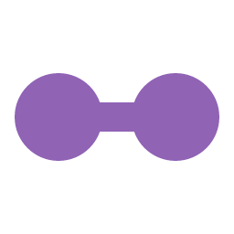
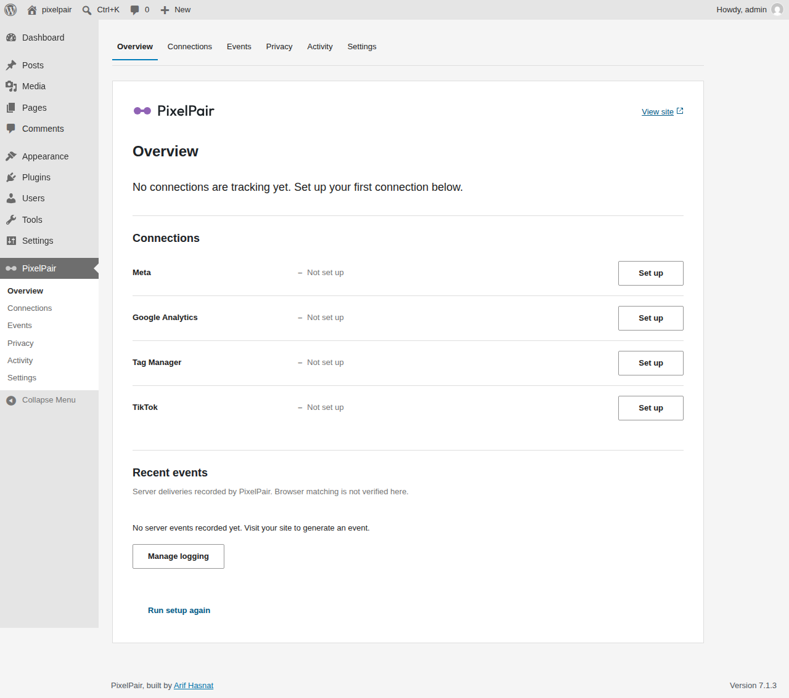

WORDPRESS PLUGIN01

PixelPairMarketing tracking, connected. My WordPress plugin brings Meta Pixel & CAPI, GA4, GTM, and TikTok together with consent-aware event tracking.
PixelPair


My first independently built, free WordPress plugin connects tracking tools and supports WooCommerce and Easy Digital Downloads events. Consent controls integrate with Cookiebot, Complianz, and CookieYes. Role and IP exclusions and page-cache support help manage tracking behavior. Its optional authenticated MCP server lets an AI assistant help manage tracking settings.
- Connect tracking tools
- Respect visitor consent
- Track commerce events
- Manage settings with MCP